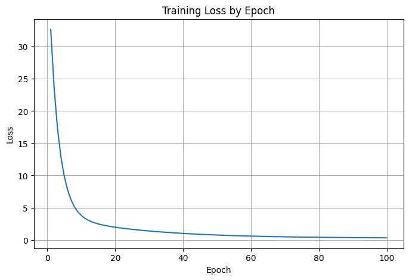
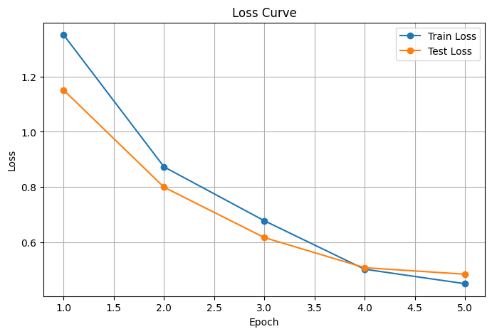
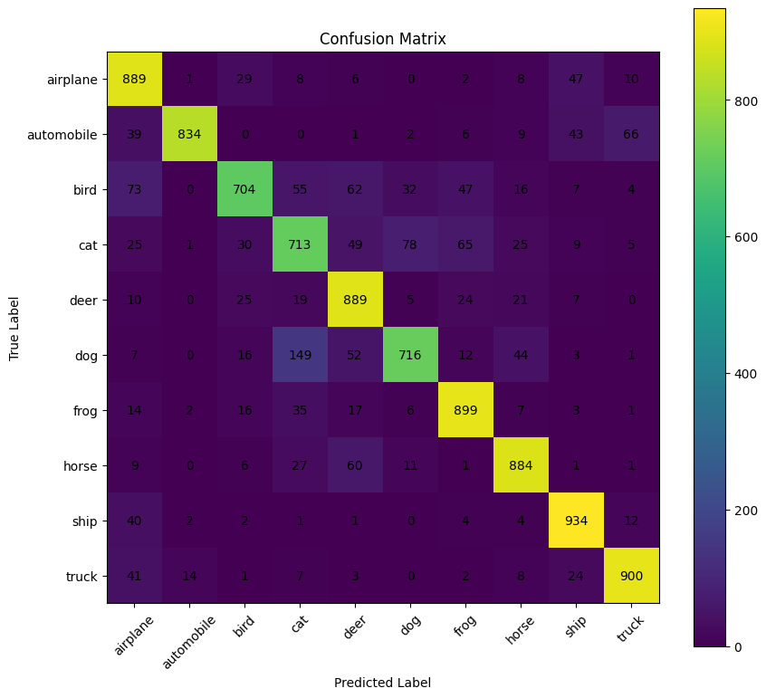

CH 01 학습이라는 루프 — 순전파·손실·역전파#
모델이 "학습을 한다"는 건 결국 오차를 가장 작게 만드는 가중치 w와 편향 b를 찾는 일이다. 한 번의 학습 사이클은 늘 같은 순서로 돈다. 데이터를 넣어 예측값을 만드는 순전파, 정답과 비교해 얼마나 틀렸는지 숫자로 매기는 손실 계산, 그 오차를 거꾸로 흘려 가중치를 고치는 역전파. 이 셋을 반복한다.
손실 함수 그래프 위 한 점에서 기울기(gradient)를 구하는 게 미분의 역할이다. 기울기가 양수면 가중치를 줄여야 손실이 줄고, 음수면 늘려야 줄어든다. 즉 기울기는 "오차를 줄이려면 어느 방향으로 얼마나 움직여야 하나"를 알려 주는 나침반이다. 경사하강법은 그 나침반의 반대 방향으로 학습률 α만큼 한 걸음씩 내려간다: w := w − α · ∂L/∂w.
기울기를 "직접 손으로 구한 미분값"과 "PyTorch가 backward()로 자동 계산한 값"은 정확히 일치할 것이다. 그렇다면 굳이 수치미분을 알 필요가 있나? — 일치 여부를 코드로 확인해 보면 답이 나온다.
CH 02 기울기를 손으로 / 자동으로 — Autograd 검증#
텐서를 만들 때 requires_grad=True를 주면, 이 텐서가 들어간 모든 연산이 계산 그래프에 기록된다. 처음엔 x.grad가 None이고, backward()를 부른 뒤에야 채워진다. x → y → z로 이어진 연산은 자식 텐서들도 모두 requires_grad=True가 되고, z.grad_fn에 어떤 연산으로 만들어졌는지(AddBackward0)가 남는다.
식은 y = x² + 4x, z = 2y + 3 = 2x² + 8x + 3으로 잡았다. 손으로 미분하면 dz/dx = 4x + 8이다. z.backward(torch.ones_like(z))로 자동 계산한 x.grad와, 직접 적은 4x + 8을 torch.allclose로 맞춰 봤다.
x.requires_grad: True
y.requires_grad: True
z.requires_grad: True
z.grad_fn: <AddBackward0 object at 0x7a2c372aec20>
자동 미분으로 구한 x.grad:
tensor([[ 9.3468, 8.5152, 8.9378, 8.9213],
[ 3.5086, 7.2547, 16.8328, 5.4480],
[ 9.8466, 9.0694, 10.1396, 11.2374]])
수식 4x + 8 로 직접 계산한 값:
tensor([[ 9.3468, 8.5152, 8.9378, 8.9213],
[ 3.5086, 7.2547, 16.8328, 5.4480],
[ 9.8466, 9.0694, 10.1396, 11.2374]])
두 값이 같은가?: True
두 방식의 결과는 소수점까지 동일했고 allclose도 True다. 수치미분(중앙차분으로 같은 기울기를 근사)은 "Autograd가 맞게 동작하는지"를 검산하는 안전장치이고, 실제 학습에서는 그래프를 거꾸로 타고 연쇄법칙으로 한 번에 미분하는 Autograd가 훨씬 싸다. 둘은 경쟁이 아니라 검증과 실전의 역할 분담이다.

CH 03 선형회귀 100 에폭 — 손실이 내려가는 모양#
정답을 y = 2x + 1(약간의 잡음 포함)으로 만들고, nn.Linear(1, 1)에 MSELoss + SGD(lr=0.01)로 100 에폭을 돌렸다. 에폭은 훈련 데이터 전체를 한 번 훑는 단위다. 매 에폭마다 optimizer.zero_grad → loss.backward → optimizer.step 순으로 기울기를 비우고, 구하고, 한 걸음 내려간다.
초기 weight·bias는 무작위로 0.1564 / −0.8799에서 출발했다. 학습이 진행되며 weight는 목표값 2.0에, bias는 1.0 쪽으로 다가간다.
초기 weight: 0.1563711166381836 초기 bias: -0.8799213171005249 Epoch [010/100] | Loss: 3.782020 | Weight: 1.7116 | Bias: -0.5306 Epoch [030/100] | Loss: 1.371338 | Weight: 1.9902 | Bias: -0.0119 Epoch [050/100] | Loss: 0.744381 | Weight: 1.9969 | Bias: 0.3344 Epoch [070/100] | Loss: 0.465205 | Weight: 1.9970 | Bias: 0.5656 Epoch [100/100] | Loss: 0.307520 | Weight: 1.9971 | Bias: 0.7766 최종 weight: 1.9970521926879883 최종 bias: 0.7766054272651672 최종 손실값: 0.30487510561943054
weight는 30 에폭 만에 1.99로 사실상 수렴했는데 bias는 100 에폭에도 0.78로 1.0에 못 미쳤다. 기울기(weight)가 손실에 더 민감해 먼저 잡히고, 절편(bias)은 천천히 따라온다. "에폭을 더 돌리면 항상 좋아진다"가 아니라, 파라미터마다 수렴 속도가 다르다는 게 손실 곡선의 평평해지는 꼬리에 그대로 드러난다. 학습률을 키우면 빨라지지만 너무 키우면 최저점을 지나쳐 발산(overshooting)한다.
CH 04 랜덤시드와 재현성 — 출발점이 결과를 바꾼다#
초기 weight·bias도, 데이터의 잡음도 난수로 정해진다. 그래서 시드를 고정하지 않으면 실행할 때마다 다른 숫자가 나온다. 재현 가능한 실험을 위해 random·numpy·torch의 시드를 모두 같은 값으로 맞추고, GPU 비결정 연산까지 cudnn.deterministic = True로 묶었다.
import torch, numpy as np, random
random.seed(42)
np.random.seed(42)
torch.manual_seed(42)
torch.cuda.manual_seed_all(42)
torch.backends.cudnn.deterministic = True
torch.backends.cudnn.benchmark = False
# 시드 42 고정 후 생성한 텐서 — 다시 돌려도 동일
tensor([[ 0.3367, 0.1288, 0.2345, 0.2303],
[-1.1229, -0.1863, 2.2082, -0.6380],
[ 0.4617, 0.2674, 0.5349, 0.8094]])
시드를 고정하니 같은 텐서·같은 초기값·같은 손실 곡선이 그대로 재현됐다. 반대로 시드를 바꾸면 초기 weight/bias가 달라지므로 손실이 내려가는 경로와 수렴 속도가 달라진다 — 다만 충분히 학습하면 최종 지표(여기선 weight≈2.0)는 비슷한 곳으로 모인다. 결론이 비슷하다고 과정이 같은 건 아니라서, 실험 비교나 디버깅을 할 땐 시드를 못 박는 게 먼저다.
CH 05 CIFAR-10 CNN — 손실 곡선과 혼동행렬#
CIFAR-10(10개 클래스, 학습 50,000 · 테스트 10,000장)을 ResNet-18 기반 CNN으로 학습했다. 입력이 32×32라 첫 conv를 stride 1·3×3으로 바꾸고 maxpool을 제거했다. CrossEntropyLoss + AdamW(lr=0.001, weight_decay=1e-4), 배치 64, SEED=111로 5 에폭, GPU(cuda)에서 돌렸다.
사용 장치: cuda Epoch 1/5 train_loss: 1.3509 | train_acc: 50.76% | test_loss: 1.1509 | test_acc: 60.99% Epoch 2/5 train_loss: 0.8727 | train_acc: 69.14% | test_loss: 0.7991 | test_acc: 72.05% Epoch 3/5 train_loss: 0.6773 | train_acc: 76.41% | test_loss: 0.6164 | test_acc: 79.42% Epoch 4/5 train_loss: 0.5016 | train_acc: 82.62% | test_loss: 0.5072 | test_acc: 83.00% 최종 테스트 손실: 0.4836 최종 테스트 정확도: 83.62% 클래스별 정확도: ship : 93.40% frog : 89.90% deer : 88.90% airplane : 88.90% horse : 88.40% truck : 90.00% bird : 70.40% cat : 71.30% dog : 71.60%

에폭마다 train·test 손실이 함께 내려가고 정확도가 같이 오른다. 두 곡선이 벌어지지 않는 동안은 과적합 신호가 약하다는 뜻이다. 마지막으로 어떤 클래스를 어떤 클래스로 헷갈리는지 혼동행렬로 확인했다.

ship·frog·truck 같은 형태가 뚜렷한 클래스는 88~93%로 잘 맞췄지만, cat·dog·bird는 70% 안팎으로 낮았다. 혼동행렬을 보면 cat↔dog(개 149장을 cat으로 오인)처럼 생김새가 비슷한 동물끼리 서로 새는 게 보인다. 전체 정확도 83.6%라는 한 숫자만 보면 이 편차를 놓친다 — 클래스별 정확도와 혼동행렬을 함께 봐야 "무엇을 더 학습시켜야 하나"가 보인다.
📚 근거 출처
- 실습 코드 —
from_colab_deep_learning/0612-s(Tensor_Autograd · Autograd_matplotlib · cifar10_cnn_pytorch) - 강의 PDF — 딥러닝_모델훈련및평가
- 공식 문서 — PyTorch Autograd